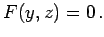
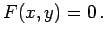
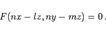
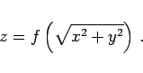
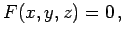

Inhalt Index DeskTop Bronstein

 Geometrie Vektoralgebra und analytische Geometrie Analytische Geometrie des Raumes Grundlegende Begriffe und Formeln, räumliche Koordinatensysteme
Geometrie Vektoralgebra und analytische Geometrie Analytische Geometrie des Raumes Grundlegende Begriffe und Formeln, räumliche Koordinatensysteme


Jeder Gleichung
Die Gleichung einer Zylinderfläche (s. auch Zylinderfläche M), deren Erzeugende parallel zur x-Achse verlaufen, enthält keine x-Koordinate:  Entsprechend enthalten die Gleichungen von Zylinderflächen, deren Erzeugende parallel zur y- bzw. zur z-Achse verlaufen, keine y- bzw. z-Koordinate: F(x,z) = 0 bzw.  Die Gleichung F(x,y)=0 beschreibt die Schnittkurve zwischen der Zylinderfläche und der x,y-Ebene. Wenn die Richtungskosinus oder ihnen proportionale Größen l, m, n der Erzeugenden einer Zylinderfläche gegeben sind, dann hat die Gleichung die Form
|  | (3.392) |
Die Gleichung einer Rotationsfläche, d.h. einer Fläche, die durch Rotation einer gegebenen Kurve in der x,z-Ebene mit der Gleichung z = f(x) erzeugt wird, ergibt sich allgemein zu
|  | (3.393) |
In Analogie dazu werden die Gleichungen von Flächen erhalten, die durch Rotation einer gegebenen Kurve um eine andere Koordinate entstehen.
Die Gleichung einer Kegelfläche, deren Spitze im Koordinatenursprung liegt (s. Kegel), ist von der Gestalt  wobei F eine homogene Funktion der Koordinaten ist (s. homogene Funktion).